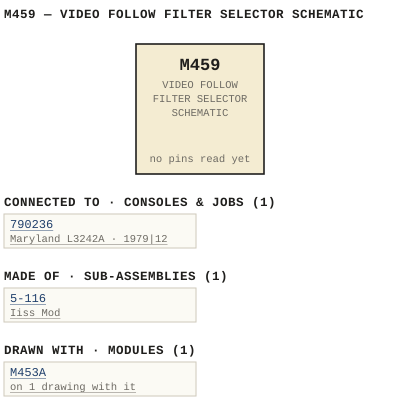

M459 — VIDEO FOLLOW FILTER SELECTOR SCHEMATIC
| Type | module |
| Category | ROUTING |
| Try it | simulator & front panel · download package (zip) |
| Earliest dated evidence | 1976|9 — title-block date |
| Evidence | "DATE AuG76" in WBS Photos-1-001/459-02-002c.jpg |
| Confidence | high |
| All years found | 1976|9, 1979|12 |
| Used in jobs | 790236 (1979|12) |
| Folder | Modules/ROUTING/M459 |
Connections
What it is made of and what it is part of.
Pictures


M459.connections.svg 1976 - 459-02-002 - M459A EFFECTS SWITCHER MODULE SCHEMATIC - DRN GEB - ISS 2 (2).jpg
1976 - 459-02-002 - M459A EFFECTS SWITCHER MODULE SCHEMATIC - DRN GEB - ISS 2 (2).jpg 1975 - 459-04-001 - ASSEMBLY - DRN DM (2).jpg
1975 - 459-04-001 - ASSEMBLY - DRN DM (2).jpg 1975 - 459-04-001 - ASSEMBLY - DRN DM - ISS 1.jpg
1975 - 459-04-001 - ASSEMBLY - DRN DM - ISS 1.jpg 1975 - 459-04-001 - ASSEMBLY - DRN DM.jpg
1975 - 459-04-001 - ASSEMBLY - DRN DM.jpg 1975 - 5-116-06-001 - PCB LAYOUT - DRN DM - ISS 1 (2).jpg
1975 - 5-116-06-001 - PCB LAYOUT - DRN DM - ISS 1 (2).jpg 1975 - 5-116-06-001 - PCB LAYOUT - DRN DM - ISS 1.jpg
1975 - 5-116-06-001 - PCB LAYOUT - DRN DM - ISS 1.jpg 1976 - 459-02-002 - M459A EFFECTS SWITCHER MODULE SCHEMATIC - DRN GEB - ISS 2.jpg
1976 - 459-02-002 - M459A EFFECTS SWITCHER MODULE SCHEMATIC - DRN GEB - ISS 2.jpg 1976 - 459-02-002 - M459A EFFECTS SWITCHER MODULE SCHEMATIC - DRN GEB - ISS 3.jpg
1976 - 459-02-002 - M459A EFFECTS SWITCHER MODULE SCHEMATIC - DRN GEB - ISS 3.jpg 1976 - B 459-02 - EFFECTS SW... MODULE SCH - DRN GEB (2).jpg
1976 - B 459-02 - EFFECTS SW... MODULE SCH - DRN GEB (2).jpg 1976 - B 459-02 - EFFECTS SW... MODULE SCH - DRN GEB.jpg
1976 - B 459-02 - EFFECTS SW... MODULE SCH - DRN GEB.jpg 1976 - M459 - 000 - cover (2).jpg
1976 - M459 - 000 - cover (2).jpg 1976 - M459 - 000 - cover.jpg
1976 - M459 - 000 - cover.jpg 1976 - M459 - 001 (2).jpg
1976 - M459 - 001 (2).jpg 1976 - M459 - 001.jpg
1976 - M459 - 001.jpg 1976 - M459 - 002 (2).jpg
1976 - M459 - 002 (2).jpg 1976 - M459 - 002.jpg
1976 - M459 - 002.jpg 1976 - M459 - 003 (2).jpg
1976 - M459 - 003 (2).jpg 1976 - M459 - 003.jpg
1976 - M459 - 003.jpg 1976 - M459 - 005.jpg
1976 - M459 - 005.jpg 1976 - M459 - 006 copy-91807389.jpg
1976 - M459 - 006 copy-91807389.jpg 1976 - M459 - 006 copy.jpg
1976 - M459 - 006 copy.jpg 1976 - M459 - 04-001.jpg
1976 - M459 - 04-001.jpg 1976 - M459 - 459-02-001 - VIDEO FOLLOW FILTER SELECTOP SCHEMATIC.jpg
1976 - M459 - 459-02-001 - VIDEO FOLLOW FILTER SELECTOP SCHEMATIC.jpg 1976 - M459 - 459-02-001 - VIDEO FOLLOW FILTER SELECTOR SCHEMATIC.jpg
1976 - M459 - 459-02-001 - VIDEO FOLLOW FILTER SELECTOR SCHEMATIC.jpg 1976 - M459 - 459-02-002 - FECTS SWITCHER DULE SCHEMATIC.jpg
1976 - M459 - 459-02-002 - FECTS SWITCHER DULE SCHEMATIC.jpg 1976 - M459 - 459-02-002 - LAMP LEVELCTL LEVEL.jpg
1976 - M459 - 459-02-002 - LAMP LEVELCTL LEVEL.jpg 1976 - M459 - 459-02-002 - PUT OUTPJT ISS-HOPCKD USED.jpg
1976 - M459 - 459-02-002 - PUT OUTPJT ISS-HOPCKD USED.jpg 1976 - M459 - 459-04-001 - LISS MODIICKD USED.jpg
1976 - M459 - 459-04-001 - LISS MODIICKD USED.jpg 1976 - M459 - 5-116-06-001 - IISS MOD.jpg
1976 - M459 - 5-116-06-001 - IISS MOD.jpg 1976 - M459 - 5-116-06-001 - WAAD-BECK SYSTEMB.jpg
1976 - M459 - 5-116-06-001 - WAAD-BECK SYSTEMB.jpg 1976 - M459 - M453A - M459 - +24V 24V CHASSIS - SCHEMATIC.jpg
1976 - M459 - M453A - M459 - +24V 24V CHASSIS - SCHEMATIC.jpg 1976 - M459 - M459 - 79023-02-006 - J2 SHA ENG SRH EFFECTS SWITCHER - DOCUMENT.jpg
1976 - M459 - M459 - 79023-02-006 - J2 SHA ENG SRH EFFECTS SWITCHER - DOCUMENT.jpg 1976 - M459 - VIDEO FOLLOW FILTER SELECTOR SCHEMATIC.jpg
1976 - M459 - VIDEO FOLLOW FILTER SELECTOR SCHEMATIC.jpg 1979 - M459 - 730230-02-006 - EFFECTS S-ITCHER CHEMATIC.jpg
1979 - M459 - 730230-02-006 - EFFECTS S-ITCHER CHEMATIC.jpg 1979 - M459 - 790236-02-006 (2).jpg
1979 - M459 - 790236-02-006 (2).jpg 1979 - M459 - 790236-02-006.jpg
1979 - M459 - 790236-02-006.jpg M459 - 004 copy.jpg
M459 - 004 copy.jpg M459 - 005 copy(1).jpg
M459 - 005 copy(1).jpg M459 - 006 copy-91807389(1).jpg
M459 - 006 copy-91807389(1).jpg M459 - 006 copy.jpg
M459 - 006 copy.jpg 1979 - 790236 - 459-02-002 - FECTS SWITCHER DULE SCHEMATIC.jpg
1979 - 790236 - 459-02-002 - FECTS SWITCHER DULE SCHEMATIC.jpg 1979 - 790236 - 459-02-002 - LAMP LEVELCTL LEVEL.jpg
1979 - 790236 - 459-02-002 - LAMP LEVELCTL LEVEL.jpg 1979 - 790236 - 459-02-002 - INPUT OUTPUT.jpg
1979 - 790236 - 459-02-002 - INPUT OUTPUT.jpg 1979 - 790236 - 459-02-002.jpg
1979 - 790236 - 459-02-002.jpg 1979 - 790236 - 459-02-002 (2).jpg
1979 - 790236 - 459-02-002 (2).jpgPinout & connections
Dates found in the documents
| Year | Kind | Text | File |
|---|---|---|---|
| 1976|9 | title-block date | DATE AuG76 |
1976 - 459-02-002 - M459A EFFECTS SWITCHER MODULE SCHEMATIC - DRN GEB - ISS 2 (2).jpg |
Physical manual inventory
| Item | Location | Status | Scanned |
|---|---|---|---|
| M459 - video follow filter selector | DUPLICATE | Recently scanned and stiched by WB | |
| M459 - video follow filter selector | Kylie did - SCANNED BUT NEEDS STICHING |
Photos & scans (40)


Sub-assemblies & parts used (1)
| Item | What | Family | Year | How we know |
|---|---|---|---|---|
| 5-116 | Iiss Mod | Sub-assemblies (n-nnn) | 1975|8 | drawing filed with it |
Consoles & jobs it is connected to (1)
Their own drawings name this module.
| Job | Year | Drawing | Page |
|---|---|---|---|
| 790236 | 1979|12 | 1979 - 790236 - 459-02-002 - FECTS SWITCHER DULE SCHEMATIC.jpg | 1 |
Named in other drawings & documents (1)
| File | Page |
|---|---|
| 19xx - RTO-144 - Module RTO-144 Jumper calculator.xlsx | 1 |
Drawings (32)
Each scan with its trace laid over it: the slider runs from the scan to the vector drawing. Click one to see it large and save it as SVG, DXF, KiCad, PDF or PowerPoint.
Video Follow Filter Selectop Schematicviewer
Video Follow Filter Selector Schematicviewer
Input Outputviewer
Lamp Effects Levelctl Input Effects Levecviewer
Fects Switcher Dule Schematicviewer
Lamp Levelctl Levelviewer
Put Outpjt Iss-Hopckd Usedviewer
Effects Switcherviewer
M459A / EFFECTS SWITCHER / MODULE SCHEMATICviewer
M459A / EFFECTS SWITCHER / MODULE SCHEMATICviewer
M459A / EFFECTS SWITCHER / MODULE SCHEMATICviewer
1979 - 790236 - 459-02-002 (2)viewer
Lamp Effects Levelctl Input Effects Levelviewer
1979 - 790236 - 459-02-002viewer
Effects S/Itcher Chematicviewer
1979 - M459 - 790236-02-006 (2)viewer
1979 - M459 - 790236-02-006viewer
PCB LAYOUTviewer
PCB LAYOUTviewer
Iiss Mod Cko Usedviewer
Lci Dssmod Ickd Usedviewer
M459 ASSEMBLYviewer
M459 ASSEMBLYviewer
M459 ASSEMBLYviewer
Liss Modiickd Usedviewer
Video Follow Filter Selector Schematicviewer
M459 EFFECTS SW... / MODULE SCH...viewer
M459 EFFECTS SW... / MODULE SCH...viewer
Read from the drawing title blocks.
| Drawing | Title | Date | Drawn by | Checked by | Iss. | Source |
|---|---|---|---|---|---|---|
| B 459-04-001 | M459 ASSEMBLY | 1975|8 | DM | file | ||
| B 459-04-001 | M459 ASSEMBLY | 1975|8 | DM | RNL | file | |
| B 459-04-001 | M459 ASSEMBLY | 1975|8 | DM | RNL | 1 | file |
| C 5-116-06-001 | PCB LAYOUT | 1975|8 | DM | RPJ | 1 | file |
| C 5-116-06-001 | PCB LAYOUT | 1975|8 | DM | RPJ | 1 | file |
| 459-02-002 | Lamp Levelctl Level | 1976|9 | GEB (Gerry E. Bell) | file | ||
| 459-02-002 | Input Output | 1976|9 | GEB (Gerry E. Bell) | file | ||
| 459-02-002 | Lamp Levelctl Level | 1976|9 | GEB (Gerry E. Bell) | file | ||
| B 459-02- | M459 EFFECTS SW... / MODULE SCH... | 1976|9 | GEB (Gerry E. Bell) | PC | file | |
| B 459-02- | M459 EFFECTS SW... / MODULE SCH... | 1976|9 | GEB (Gerry E. Bell) | PC | file | |
| B 459-02-002 | M459A / EFFECTS SWITCHER / MODULE SCHEMATIC | 1976|9 | GEB (Gerry E. Bell) | PC | 2 | file |
| B 459-02-002 | M459A / EFFECTS SWITCHER / MODULE SCHEMATIC | 1976|9 | GEB (Gerry E. Bell) | PC | 2 | file |
| LB 459-02-002 | M459A / EFFECTS SWITCHER / MODULE SCHEMATIC | 1976|9 | PC | 3 | file | |
| — | Video Follow Filter Selector Schematic | D DATE | file | |||
| — | file | |||||
| — | file | |||||
| — | file | |||||
| — | file | |||||
| 459-02-001 | Video Follow Filter Selector Schematic | DM | AN | file | ||
| 459-02-001 | Video Follow Filter Selectop Schematic | DN | file | |||
| 459-02-002 | Fects Switcher Dule Schematic | file | ||||
| 459-02-002 | file | |||||
| 459-02-002 | Put Outpjt Iss-Hopckd Used | RC | file | |||
| 459-02-002 | Fects Switcher Dule Schematic | file | ||||
| 459-02-002 | file | |||||
| 459-04-001 | Liss Modiickd Used | FA | file | |||
| 5-116-06-001 | Waad-Beck Systemb | file | ||||
| 5-116-06-001 | Iiss Mod | file | ||||
| 730230-02-006 | Effects S/Itcher Chematic | 3 | file | |||
| 730236-02-006 | Effects Switcher | ERH | file | |||
| 790236-02-006 | file | |||||
| 790236-02-006 | SRH | RC | file |